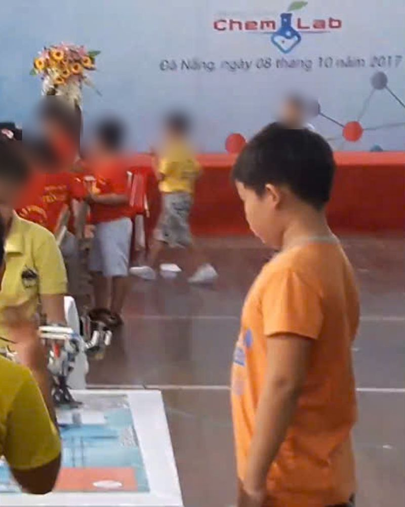
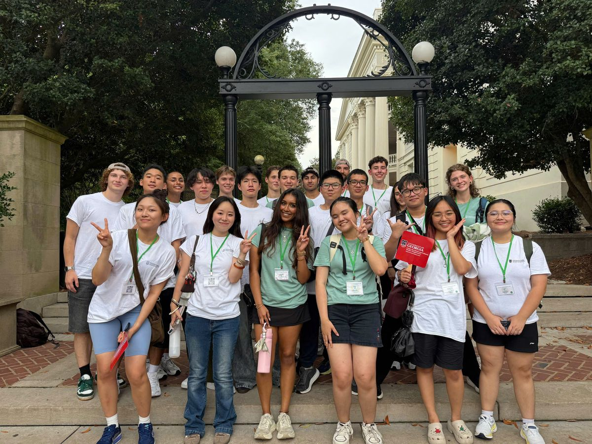

About me
From a three-generation home in Đà Nẵng to computer science at the University of Georgia.

Growing up in Đà Nẵng
I grew up in Đà Nẵng, Vietnam, in a home shared by three generations. My grandparents, my parents, my younger sibling and I were part of one another’s everyday lives. When I think about home, I think about having those people close by, and about the work that made that possible.


Psst: photos sometimes have something written on the back.
How I found computer science

I’m drawn to computer science because I want to understand how things work well enough to build them myself. That interest has taken shape through projects like Remember Me, a diary app for people living with Alzheimer’s, and Golden Peace, a wellness app for older adults in Vietnam. Working on them has given me a question to come back to: can the person I’m building for actually use what I’ve made?
Being there for others
When I interviewed my grandmother and my father about their lives, I expected to hear mostly about hardship. My grandmother had worked in the rice fields from the age of twelve. My father had changed his university major to pursue a field he believed had a future. But when I asked what mattered most, their answers were about family. My grandmother wanted peace in the family. My father said wealth and status meant little compared with watching his children grow up.
Those conversations changed how I understood their hard work. We work hard so that, in the end, we get to be there for one another. I want to carry that idea into what I build: pay attention to the people who will use it, take their difficulties seriously, and keep working until it is easier for them.
Life so far
- Đà Nẵng, Vietnam. A home shared by three generations.
- First robotics competition, in Đà Nẵng.
- Semi-finalist at the 7th U-Invent Competition (national), and a prize at the city Youth Informatics Contest.
- Student researcher at Duy Tan University, the only high school student on an AI research team. Also built Remember Me.
- Co-founded EmoTech, a digital wellness initiative.
- Started Golden Peace, and a developer internship at DZFullStack Software Solutions.
- First Prize, National Round, MOS World Championship.
- Vice President of the AgeWell Tech Solutions Club.
- English national-exam team.
- University of Georgia, Classic City Scholar, studying computer science.
Now at UGA
I study computer science at the University of Georgia. I’m interested in artificial intelligence and in the foundations that make software work. I want to develop the technical depth to build useful tools from the ground up, while keeping the people using them in view. You can see that work in my projects or get in touch.
